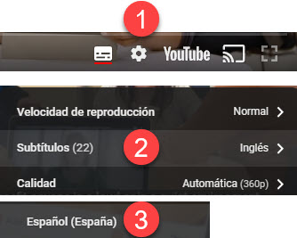
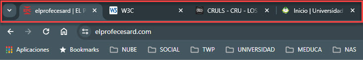
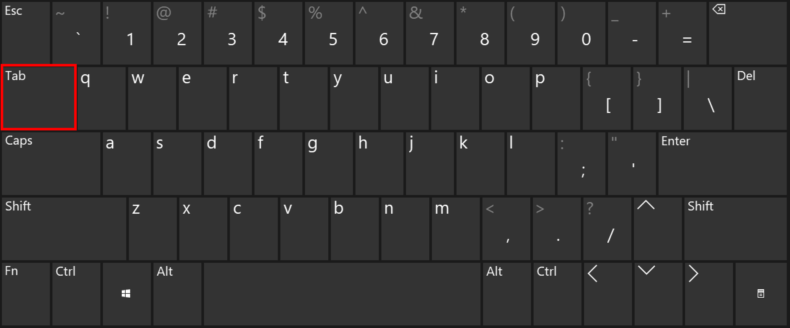
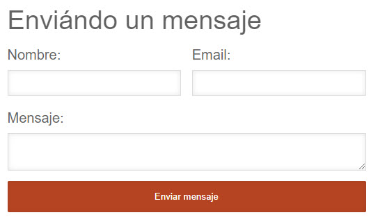
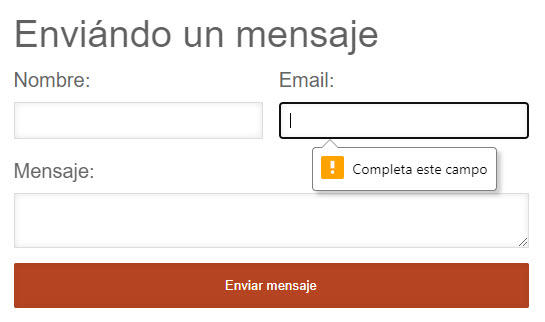

Evaluación de Accesibilidad
Al desarrollar o rediseñar un sitio web o una aplicación web, se debe evaluar la accesibilidad desde el principio y durante todo el proceso de desarrollo para identificar los problemas de accesibilidad lo antes posible, cuando es más fácil resolverlos.

La evaluación de la accesibilidad web es crucial para garantizar que las páginas web cumplan con los estándares de accesibilidad y puedan ser utilizadas de forma satisfactoria por diversos tipos de personas. Esta evaluación puede realizarse de forma automática o manual, utilizando diversas herramientas de revisión. La evaluación automática proporciona una primera impresión de la accesibilidad de una página web, pero un análisis manual por parte de un experto es necesario para ofrecer un análisis completo y fiable. Además, el test de accesibilidad web realizado a un conjunto de usuarios con diferentes perfiles es un elemento clave en la evaluación de la accesibilidad web.
Comprobaciones de accesibilidad
Título de la página
Los títulos de las páginas son:
- Se muestra en la barra de título de la ventana en algunos navegadores.
- Se muestra en las pestañas de los navegadores cuando hay varias páginas web abiertas.
- Mostrado en los resultados del motor de búsqueda.
- Utilizado para marcadores/favoritos del navegador.
- Leído por lectores de pantalla
(En el marcado de la página web son el <título> dentro del <encabezado>).
Una revisión sencilla de accesibilidad web es comprobar en la barra de navegación los títulos y las 4 páginas en las pestañas. Los buenos títulos orientan al usuario para que pueda moverse entre las páginas abiertas en el navegador.

Qué hacer
- Mirar el título de la página (o con un lector de pantalla, escúchalo).
- Mirar los títulos de otras páginas dentro del sitio web.
Qué comprobar
- Comprobar que exista un título que describa adecuada y brevemente el contenido de la página.
- Comprobar que el título sea diferente al de otras páginas del sitio web, y distinguir adecuadamente la página de otras páginas web.
Alternativas de texto de imagen (texto alternativo)
El texto alternativo transmite el propósito de una imagen, incluidas imágenes, ilustraciones, gráficos, etc. Las personas que no ven la imagen utilizan las alternativas de texto.
El texto debe ser funcional y proporcionar una experiencia de usuario equivalente, no necesariamente describir la imagen. (Por ejemplo, la alternativa de texto adecuada para un botón de búsqueda sería "Buscar", no "lupa").
Qué comprobar
Cada imagen tiene un texto alternativo apropiado, que es representado en HTML con el atributo alt.
Texto
Encabezamiento
Las páginas web suelen tener secciones de información separadas por encabezados visuales. Los encabezados son visibles por niveles que tienen una jerarquía significativa.
- Nivel de encabezado 1 <h1>
- Nivel de encabezado 2 <h2>
- Nivel de encabezado 3 <h3>
- Nivel de encabezado 3 <h3>
- Nivel de encabezado 2 <h2>
- Nivel de encabezado 3 <h3>
- Nivel de encabezado 4 <h4>
- Nivel de encabezado 4 <h4>
- Nivel de encabezado 3 <h3>
- Nivel de encabezado 2 <h2>
- Nivel de encabezado 2 <h2>
Qué comprobar
- La página tiene un encabezado. En casi todas las páginas debe haber al menos un título.
- Todo el texto que parece un título está marcado como título.
- Todo el texto marcado como título es en realidad un título de sección conceptual.
- La jerarquía de títulos es significativa. Lo ideal es que la página comience con un "h1", que suele ser similar al título de la página, y no se salte niveles; sin embargo, estos no son requisitos absolutos.
Relación de contraste (contraste de color)
Los navegadores web deberían permitir a las personas cambiar el color del texto y el fondo, y las páginas web deben funcionar cuando las personas cambian de color. Ante diversas situaciones nos encontramos con distintos tipos de usuarios:
- Usuarios que no pueden leer el texto si no hay suficiente contraste entre el texto y el fondo, por ejemplo, texto gris claro sobre un fondo claro.
- Usuarios con discapacidad visual y adultos que pierden sensibilidad al contraste con el envejecimiento, necesitan un alto contraste (por ejemplo, texto oscuro sobre fondo claro o texto brillante sobre fondo oscuro).
- En otros casos, mientras que algunas personas necesitan un alto contraste, para otras (incluidas algunas personas con problemas de lectura como la dislexia) los colores brillantes (alta luminosidad) no son legibles. Necesitan baja luminancia.
Qué comprobar
Un contraste mínimo de forma predeterminada: una relación de contraste de al menos 4,5:1 para texto de tamaño normal. Existen 3 formas de comprobar el contraste:
- Tabla con relación de contraste: con todas las relaciones de contraste posibles.
- Cuentagotas para seleccionar colores, para darle color de texto y fondo. Actualmente en Internet hay aplicaciones basadas en paletas de colores.
- Desactiva el color, para mostrar la página en escala de grises.
Cambiar el tamaño del texto
Algunas personas necesitan ampliar el contenido web para poder leerlo y otros aspectos de la visualización del texto como la fuente y el espacio entre líneas.
La mayoría de los navegadores permiten a los usuarios cambiar el tamaño del texto a través de:
- Configuración del tamaño del texto (generalmente a través de Opciones o Preferencias)
- Zoom de solo texto
- Zoom de página (que también amplía imágenes, botones, etc.)
Qué hacer
- Aumentar el tamaño del texto.
Qué comprobar
- Todo el texto se hace más grande. (El texto no se proporciona como formato de texto real, sino que está en una imagen. El texto en las imágenes no aumenta cuando los usuarios aumentan el tamaño del texto).
- El texto no desaparece ni se corta.
- El texto, las imágenes y otros contenidos no se superponen.
- Todos los botones, campos de formulario y otros controles son visibles y utilizables.
- No es necesario el desplazamiento horizontal para leer oraciones o "bloques de texto". Se recomienda que cuando se aumenta el tamaño del texto, todo el texto de una oración sea visible.
Interacción
Acceso al teclado y enfoque visual
Existen usuarios que no pueden utilizar el ratón y dependen del teclado para interactuar con la Web. De igual manera, las personas ciegas y algunas personas videntes con problemas de movilidad dependen del teclado o de tecnologías y estrategias de asistencia que se basan en comandos del teclado, como la entrada de voz. Los sitios web accesibles permiten a las personas acceder a todo el contenido y las funciones (enlaces, formularios, controles multimedia, etc.) a través de un teclado.

Qué comprobar
- Tabulador para todos: Comprobar que puede tabular todos los elementos, incluidos enlaces, campos de formulario, botones y controles del reproductor multimedia. (Por ejemplo, verifique que puede acceder a los controles del reproductor multimedia).
- Tabulador: Comprobar que puede alejarse de todos los elementos en los que puede tabular. (Un problema común es que el foco del teclado queda atrapado en los controles multimedia y no se puede salir; se llama "trampa del teclado").
- Orden de tabulación: Comprobar que el orden de tabulación sigue el orden de lectura lógico (por ejemplo, para idiomas de izquierda a derecha: de arriba a abajo, de izquierda a derecha) en secuencia.
- Enfoque visual: Comprobar que el foco sea claramente visible a medida que avanza por los elementos, es decir, puede saber qué elemento tiene el foco, por ejemplo, los enlaces tienen un contorno gris alrededor o están resaltados.
- Toda la funcionalidad mediante teclado: Comprobar que puede hacer todo con el teclado; es decir, no necesita el mouse para activar acciones, opciones, cambios visibles y otras funcionalidades. (Un problema común es que algunas funciones solo están disponibles al pasar el mouse y no están disponibles con el teclado).
- Listas desplegables: Comprobar que después de acceder a una lista desplegable, pueda utilizar las teclas de flecha para moverse por todas las opciones sin activar una acción. (En ocasiones, desde que se mueve la flecha hacia abajo, se selecciona el primer elemento de la lista y va a una nueva página; no puede acceder a otros elementos de la lista).
- Enlaces de imágenes: Comprobar que cuando las imágenes sean enlaces, tengan un enfoque visual claro y se puedan activar mediante el teclado (normalmente pulsando la tecla Intro).
Formulario, etiquetas y errores
Las etiquetas, el acceso al teclado, las instrucciones claras y el manejo eficaz de errores son importantes para la accesibilidad de los formularios.
Los campos de formulario y otros controles de formulario suelen tener etiquetas visibles, como "Dirección de correo electrónico:" como etiqueta para un campo de texto.

Cuando estas etiquetas están marcadas correctamente, las personas pueden interactuar con ellas usando solo el teclado, la entrada de voz y los lectores de pantalla.
Qué comprobar
Acceso al teclado
- Verificar que todos los controles del formulario sean accesibles mediante el teclado.
Etiquetas
- Verificar que cada control de formulario tenga una etiqueta asociada usando 'label', 'for' e 'id'.
- Comprobar que las etiquetas estén colocadas correctamente. Para los idiomas que se escriben de izquierda a derecha, las etiquetas normalmente deberían ser:
- A la izquierda de los cuadros de texto y las listas desplegables.
- Derecha de botones de radio y casillas de verificación.
Campos obligatorios y otras instrucciones
- Comprobar que los campos requeridos/obligatorios estén claramente indicados.
- Comprobar que el indicador no dependa únicamente del color; por ejemplo, si los campos obligatorios solo estuvieran indicados con etiquetas de color rojo, no serían accesibles para las personas que no ven los diferentes colores.
- Verificar que el indicador (como los asteriscos (*)) esté incluido en la etiqueta del campo marcado para cuadros de texto y listas desplegables, o en la leyenda de botones de opción y casillas de verificación.
- Verificar que las instrucciones para completar el formulario estén antes de que sean necesarias, por ejemplo:
- Las instrucciones generales normalmente deben estar en la parte superior del formulario o de la sección a la que se refieren.
- Verificar que los formatos requeridos, como las fechas (año-mes-fecha en el formato 0000-00-00), estén incluidos en la etiqueta marcada, utilizando las comprobaciones de etiquetas a continuación.
Manejo de errores
Es posible que algunos formularios simples, como un campo de búsqueda único, no contengan ningún error. Si cree que pueden tener mensajes de error, intente dejar los campos obligatorios en blanco o ingresar información con formato incorrecto (como número de teléfono o dirección de correo electrónico) y luego envíe el formulario. Si recibe errores:
- Verificar que se brinde orientación clara y específica para ayudar a las personas a comprender y corregir el error. Si el error se refiere a un formato como fecha, hora o dirección, verifique que se explique claramente el formato correcto.
- Comprobar que los errores se puedan encontrar fácilmente. Generalmente es mejor si los mensajes de error aparecen antes del formulario, en lugar de después del mismo.
- Verificar que los campos sin errores todavía estén llenos con los datos que ingresó. Los usuarios no deberían tener que volver a ingresar toda la información en el formulario, excepto algunos datos confidenciales, como los números de tarjetas de crédito.

General
Contenido en movimiento, parpadeante o parpadeante
Los usuarios deben poder controlar el contenido en movimiento, especialmente algunas personas con trastorno por déficit de atención o trastornos del procesamiento visual. Por ejemplo, a tener contenido en movimiento, intermitente o parpadeante (Incluye carruseles, anuncios, vídeos, tickers de acciones con actualización automática, fuentes de noticias con desplazamiento, entre otros).
Los posibles problemas de accesibilidad son:
- Comprender la información en movimiento, ya que algunos usuarios leen y procesan la información lentamente. El contenido puede desaparecer antes de que la gente tenga tiempo de leerlo y es probable que se presente dificulta para usuarios que tienen dificultades para seguir objetos en movimiento.
- Distracción del contenido en movimiento, porque puede dificultar la concentración y la lectura en otros lugares. Por lo tanto, las personas no pueden centrarse en algún contenido porque el movimiento en otra área de la página web les llama la atención.
El contenido parpadeante puede provocar convulsiones en personas con epilepsia fotosensible, especialmente si:
- Parpadea más de tres veces en un segundo.
- Cubre un área suficientemente grande de la pantalla.
- Es lo suficientemente brillante.
Qué comprobar
- Comprobar si hay información en movimiento, parpadeante o desplazándose que se inicia automáticamente y dura más de cinco segundos. Verificar que haya una manera para que el usuario pueda pausar, detener u ocultar el movimiento.
- Comprobar si hay información actualizada automáticamente (como el precio de las acciones). Si es así, verifique que haya una manera para que el usuario pueda pausar, detener u ocultar la información actualizada, o para que el usuario controle la frecuencia de la actualización.
- Compruebe que ningún contenido parpadee más de tres veces en un segundo.
Alternativas multimedia (Audio, video)
La información contenida en recursos multimedia como podcasts u otros audios no está disponible para personas sordas o con problemas de audición, a menos que se proporcione en un formato alternativo, como subtítulos y transcripciones de texto. La información visual de los vídeos no está disponible para personas ciegas o con baja visión, a menos que se proporcione en un formato alternativo, como audio o texto. (El texto puede leerse mediante un lector de pantalla o una pantalla Braille, o ampliarse y reformatearse para personas con baja visión).
Qué comprobar
- Acceso al teclado. Con los pasos para acceder al teclado, asegure que los controles del reproductor multimedia estén etiquetados y sean accesibles desde el teclado.
- Control de inicio automático: Es mejor si el audio no se inicia automáticamente cuando se abre una página web. Si se inicia automáticamente, debería:
- Deténgase después de 3 segundos.
- Incluye controles para pausar o detener el audio.
- Incluye controles para bajar el volumen.
- Subtítulos: La mayoría de los vídeos tienen "subtítulos" que se pueden activar y desactivar. Por ejemplo, en YouTube, los subtítulos se activan con el botón CC (no se conoce el acceso al teclado). Si no hay un botón CC, no hay subtítulos disponibles para ese video. Los subtítulos automáticos no son suficientes para la accesibilidad porque no son lo suficientemente precisos. Por ejemplo, en YouTube, si solo aparecen "subtítulos automáticos", no hay suficientes subtítulos y no se puede acceder al video. Es necesario enumerar los subtítulos en el idioma específico. Si hay subtítulos, puedes comprobar que:
- Los subtítulos parecen sincronizados con el contenido hablado.
- Las personas que hablan se identifican cuando hablan.
- Se incluyen sonidos importantes distintos del diálogo (Por ejemplo, pasos que se acercan, puertas que se cierran, cristales que se rompen).
- Transcripción: Es una buena práctica proporcionar subtítulos y transcripciones, ya que tiene beneficios para las personas con discapacidades y para los propietarios de sitios web. Las transcripciones deben ser fáciles de encontrar cerca del audio/video en sí y de cualquier enlace al audio/video. Es conveniente verificar que las transcripciones incluyan toda la información de audio, incluido el diálogo con los oradores identificados y todos los sonidos importantes (por ejemplo, pasos acercándose, puertas que se cierran, cristales rotos). Una transcripción de un vídeo podría proporcionar todo el audio y toda la información visual, de modo que una persona pueda obtener todo el contenido del vídeo leyendo el texto.
- Audiodescripción (Vídeo descrito, descripción de vídeo o interpretación visual): Es la descripción de información visual importante en un vídeo, con el fin de hacerlo accesible para personas que no pueden ver. Por ejemplo, algunos vídeos comienzan con un título en texto, tienen nombres de oradores en texto y tienen ilustraciones. Esa información visual debe proporcionarse a las personas que no pueden ver el vídeo. Se puede proporcionar a través de:
- Descripción de audio, donde la pista de audio incluye a alguien que describe las imágenes importantes. (Se puede incluir en el vídeo principal o se puede proporcionar en un vídeo separado).
- Transcripción de texto, que incluye una descripción de información visual significativa (por lo que es como un guión).
Verificación de estructura básica
Esta verificación ayuda a comprender cómo algunas personas "ven" la página web de manera diferente. Para esta verificación de estructura básica, se debe observar la página web sin imágenes, estilos ni diseño. Al estar diseñadas con múltiples columnas, secciones, colores y otros aspectos visuales, ayudan a organizar la información para los usuarios que ven la página de manera predeterminada, pero no todos la observan de esta manera, tal es el caso de las personas con ceguera que utilizan un lector de pantalla o la leen en una pantalla Braille. Algunas personas con baja visión y otras cambian la forma en que se muestra la página para poder leerla; por ejemplo, cambiar de varias columnas a una columna, cambiar el tamaño del texto y más.
Qué hacer
- Obtener una vista de la estructura básica de la página (Siguiendo las instrucciones en Verificaciones de estructura básica) para:
- Desactivar las imágenes y mostrar las alternativas de texto.
- Desactivar las hojas de estilo (CSS), que especifican cómo se muestra la página con diseño, colores, etc.
- Linealizar la página o las tablas (según la barra de herramientas).
Qué comprobar
- Comprobar que la información tenga sentido cuando se lea en el orden en que se muestra; por ejemplo, los títulos están justo encima de la información a la que se aplican.
- Verificar que el texto alternativo proporcione información adecuada para las imágenes que faltan (según la sección Alternativas de texto).
- Verificar que los bloques de información tengan títulos claros (consulte Encabezados). Cuando la navegación, el contenido principal y otras secciones tienen buenos títulos, es más fácil para las personas orientarse en la información.
Recuerde: Compartir los hallazgos y fomentar una evaluación exhaustiva de la accesibilidad.